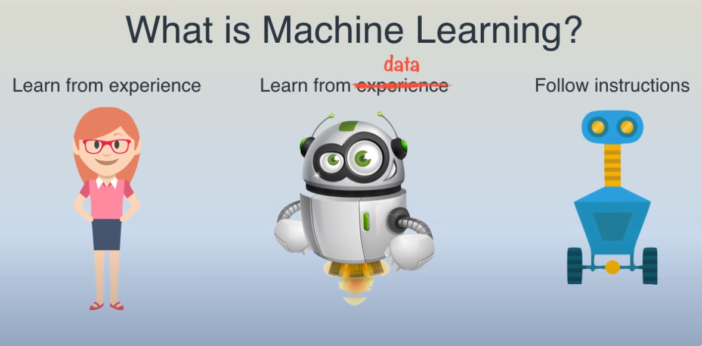
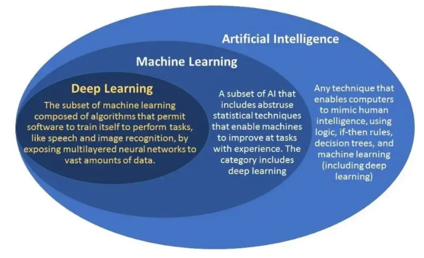
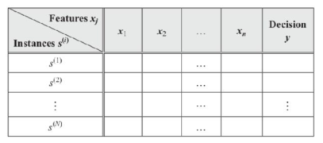
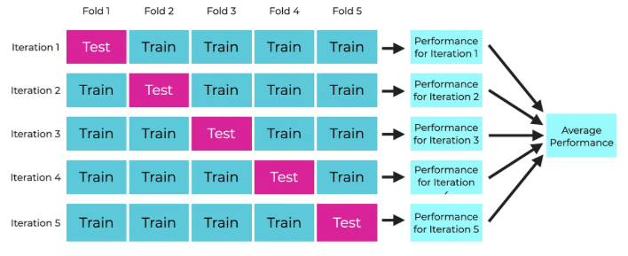

Uvod
Šta ćemo saznati u ovom poglavlju? (ili Šta nas očekuje u ovom poglavlju)
Šta podrazumevamo pod veštačkom inteligencijom?
Šta je mašinsko učenje?
Pregled koncepta veštačke inteligencije.
Osnovni koncepti i pojmovi o kojima ćemo pričati.
Polazne ideje i ključni pojmovi u oblasti mašinskog učenja.
Najčešće primene veštačke inteligencije i mašinskog učenja.
Glavni pristupi u mašinskom učenju.
Izazovi u mašinskom učenju.
U današnje vreme, skoro pa i neprimetno, korisnici digitalnih tehnologija svakodnevno komuniciraju sa inteligentnim sistemima koji donose odluke, pružaju preporuke i prilagođavaju se njihovim individualnim navikama kao neizostavni deo svakodnevnice.
Nakon uspešnog dana na poslu želite da se opustite uz muziku, a telefon vam predlaže novu pesmu koja vam se već na prvo slušanje izuzetno dopada. Pametni sistem u pozadini, analizirajući vašu istoriju slušanja, omiljene žanrove i izvođače, sam je zaključio koja pesma ima najveću verovatnoću da vam se svidi, i to bez vasih didatnih sugestija. U nastavku putovanja, navigacioni sistem daje preporuku za najefikasniju putanju kako biste izbegli zastoj. U toku voznje, auto je prepoznalo pešaka i automatski bezbednosni mehanizam aktivira kočnice, a vozilo usporava ili potpuno staje.
Događaj koji je nagovestio kako su računari počeli da kreiraju budućnost u mnogim oblastima .
Iako potiče iz davnina, bogata istorija šaha svedoči o njegovom značajnom uticaju na razvoj intelektualnih i kognitivnih sposobnosti pojedinaca, usavršavanje taktičkog i strateškog planiranja, kao i sposobnosti donošenja ispravnih odluka. Da će u mnogim oblastima u budućnosti računari dominirati možda je nagovestio događaj koji se odigrao u Njujorku u maja 1997. god. kada je računar pobedio tadašnjeg svetskog šampiona u šahu Garija Kasparova. Naime tada je ruski velemajstoj G. Kasparov poražen u odlučujućoj partiji od računara Deep blue kompanije IBM, gde je jedan od inženjera te kompanije koji je sedeo sa druge strane stola naspram jednog od najboljih šahista sveta Kasparova, povlačio poteze koje mu sugerisao računar. Ovaj veliki događaj izazvao je veliku pažnju, iznenađenja i različite komentare. Čak je jedan televizijski komentator bio toliko iznenađen da je to nazvao porazom čovečanstva. Mnogi su taj meč označili kao tehnoški izazov i novi put u budućnost nauke i svakodnevice.
Ovo su samo neki od brojnih primera prisutnosti mašinskog učenja u svakodnevnim aktivnostima. Navedeni sistemi u sposobni da stiču znanje i formulišu izlazne zaključke i rešenja na osnovu učenja iz empirijskih podataka. Dok su ranije računari uglavnom izvršavali instrukcije koje im je čovek zadavao, u poslednjim decenijama oni dobijaju ulogu da sve češće samostalno stiču znanja i izvode zaključke direktno iz sirovih podataka.
Koje su mogućnosti i granice mašinskog učenja, i kako ih mi možemo iskoristiti za unapređenje našeg znanja?
Ovo poglavlje pruža uvod u ključne principe mašinskog učenja. Daje uvid u to kako se znanje može graditi iz podataka, kako se prepoznaju obrasci koji nisu uvek očigledni, i kako modeli greše, uče iz grešaka i postaju sve precizniji.
U savremenom okruženju u kojem je tehnološki razvoj brži nego ikada ranije i gde se svet neprestano menja, mašinsko učenje postaje izuzetno značajno u tehnološkoj revoluciji koja sve više oblikuje našu svakodnevicu. Mašinsko učenje omogućava računarima da samostalno uče iz dostupnih podataka, i da bez eksplicitnog programiranja rešavaju zadatke i donose odluke. Sa sve većim količinama podataka koji postaju dostupni u svakodnevnom aktivnostima, opravdano je očekivati da će pametna analiza podataka biti sve više prisutna i neophodna, ne samo u nauci, već i u širokom spektru profesionalnih i svakodnevnih zadataka.
Napomena.
U ovom poglavlju upoznaćemo se sa nekoliko osnovnih pojmova iz mašinskog učenja koje ćete upoznati dok učite o veštačkoj inteligenciji. Razumevanje ovih osnovnih koncepata pomaže da bolje shvatimo kako funkcionišu sistemi mašinskog učenja. Pre nego što nastavite dalje sa čitanjem ostatka knjige, potrudite se da jasno shvatite ove koncepte i upoznate se sa osnovnim pojmovima.
Veštačka inteligencija (engl. Artificial Intelligence, AI) predstavlja oblast računarstva koja se bavi razvojem sposobnosti mašina da oponašaju ljudsku inteligenciju i način razmišljanja, uključujući učenje, zaključivanje, donošenje odluka, rešavanje problema, itd. Usled mogućnosti efikasne obrade velikih skupova podataka sistemi veštačke inteligencije mogu vremenom unapređivati svoje performanse, ali i generisati novi sadržaj zasnovan na naučenim pravilnostima.Veštačka inteligencija ima za cilj razvoj računarskih sistema koji, zahvaljujući svojoj sposobnosti da brzo obrađuju velike količine podataka, mogu efikasno rešavati kompleksne zadatke, u nekim slučajevima premašujući i ljudske kognitivne sposobnosti. Koncept veštačke inteligencije vuče korene iz 20 veka, kada su postavljene ključne teorijske i praktične osnove za njen razvoj, povezane sa imenima Allana Taringa, Džona Makartija i drugih pionira. U poslednjim godinama veštačka inteligencija dobija sve veću popularnost i dinamičan razvoj, kao i sve veću primenu u naučnim istraživanjima, ali i široku u svakodnevnom životu, čineći osnovu mnogih funkcija, aplikacija, tehnologija i servisa koje svakodnevno koristimo. Zanimljivo je da je Turing još u svom pionirskom radu iz 1950. godine ukazao da učenje treba da bude ključni element svakog inteligentnog sistema: „Umesto da pokušamo da napravimo program koji simulira um odraslog čoveka, zašto ne bismo radije pokušali da napravimo onaj koji simulira um deteta? Ako bi taj program zatim bio podvrgnut odgovarajućem kursu obuke, dobili bismo mozak odraslog čoveka.”
Mašinsko učenje (engl. Machine learning, ML) je podgrana veštačke inteligencije, koje je kao disciplina proizašlo iz kombinovanja više različitih naučnih oblasti, prvenstveno statistike, računarstva i neuro-nauke, ali i optimizacije, teorije odlučivanja i teorije igara. Mašinsko učenje predstavlja oblast računarstva koja se bavi razvojem algoritama sposobnih da prepoznaju obrasce u podacima i uče iz njih, radi donošenja odluka zasnovanih na samim podacima. Početkom XXI veka, došlo je do značajnog unapređenja u razvoju veštačke inteligencije zahvaljujući razvoju novih tehnologija, pre svega napretku u računarskom hardveru, koji je omogućio veću brzinu obrade, veći kapacitet memorije i sposobnost da se obrađuju, skladište i analiziraju znatno veće količine podataka. Mašinsko učenje omogućava upravljanje složenim sistemima i automatsko učenje iz podataka, čime prevazilazi ograničenja tradicionalnih metoda i nadmašuje ljudske sposobnosti u određenim oblastima u kojima su do skoro računari bili manje uspešni u poređenju sa ljudima.
Tom Mišel (engl. Tom M. Mitchell) u svojoj knjizi („Machine Learning”, 1997) dao je jednu od najpoznatijih definicija pojma mašinskog učenja, koja glasi: „Kažemo da računski program uči iz iskustva E u odnosu na skup zadataka T i meru performansi P ako se njegovo izvođenje zadataka iz T, merеnо pomoću P, poboljšava sa iskustvom E.” (engl. „A computer program is said to learn from experience E with respect to some class of tasks T and performance measure P, if its performance at tasks in T, as measured by P, improves with experience E.”), gde je:
T – zadatak (jedan ili više) za koji se program obučava;
E – iskustvo, tj. skup podataka iz kojih program uči;
P – mera učinka, tj. mera performanse progresa u učenju.
Ilustrovano na primeru, Mitchellova definicija se može razumeti na sledeći način: zadatak (T) je da program prepozna da li je nova e-pošta neželjena (engl. spam) ili legitimna (engl. ham) poruka. Iskustvo (E) predstavlja obuku na velikom broju prethodno klasifikovanih mejlova kao neželjena ili legitimna pošta. Mera performansi (P) najčešće je tačnost (engl. accuracy) koja predstavlja procenat ukupno ispravno klasifikovanih primera na testu. Ako model vremenom postiže sve bolju tačnost P kako dobija više označenih primera E (Obeleženih E-mailova), možemo reći da uspešno uči da obavlja svoj zadatak klasifikacije T. Drugi primer bi mogao da bude sledeći: zadatak (T) podrazumeva igranje šaha, gde je cilj da sistem nauči kako da donosi optimalne poteze u različitim pozicijama na tabli. Mera performansi (P) izražava se kroz procenat dobijenih partija protiv različitih protivnika i služi za procenu uspešnosti naučenih strategija. Iskustvo učenja (E) ogleda se u velikom broju trening-partija, pri čemu kroz ponavljanje i analizu ishoda unapređuje svoje odluke i postaje sve uspešniji.
Jedno od prvih pominjanja termina mašinsko učenje datira iz 1959. godine, kada je Artur Samjuel (engl. Arthur Samuel), tokom svog istraživačkog rada na računarskom programu za igru dama, uočio da se performanse programa poboljšavaju kroz iskustvo, pa je to zapažanje formulisao u definiciju mašinskog učenja: „Mašinsko učenje je oblast koja računarima daje sposobnost da uče bez eksplicitnog programiranja.“ (engl. „Machine learning is the field of study that gives computers the ability to learn without being explicitly programmed.”)
Prema autoru Murphy-ju (videti Murphy (2012, strana xxvii)), „cilj mašinskog učenja je da razvije metode koje mogu automatski detektovati obrasce u podacima, a zatim da koriste otkrivene obrasce za predviđanje budućih podataka ili drugih ishoda od interesa.”
Dok čovek stiče znanja i veštine kroz direktno, lično iskustvo, uključujući emocionalne i kontekstualne dimenzije, modeli mašinskog učenja uče isključivo iz analize ogromnih skupova podataka. Pogledajte ilustraciju na slici koja prikazuje ovu razliku.
{kind=link}

Slika 19. Mašinsko učenje iskustvo (Izvor: bigdata.black, ili https://dwbimaster.com/what-is-machine-learning/ )
Algoritmi mašinsko učenja postaju zastupljeni u različitim industrijama i menjaju način poslovanja i organizacije sistema. Revoluciju pokreću revolucionarni napredak u algoritmima i sve veća dostupnost podataka što rezultira eksponencijalni napredak algoritama mašinskog učenja, kao i intenzivnu ekspanziju primene u različitim domenima.
Mašinsko učenje ima širok dijapazon primene u različitim oblastima, obuhvatajući nauku, industriju i svakodnevne aktivnosti. Neki od primera delatnosti i aktivnosti u kojima se modeli mašinskog učenja uspešno primenjuju:
Prepoznavanje objekata i identifikaciju lica na fotografijama i video zapisima, kao i obrada govora i razumevanje prirodnog jezika (na primer, u interakciji sa digitalnim asistentima poput Siri ili Alexa).
Upravljanje autonomnim sistemima: modeli za razvoj autonomnih vozila.
Medicinska dijagnostika.
Klasifikacija elektronske pošte i vesti.
Analiza sentimenta.
Kreiranje efikasnih sistema za preporuke sadržaja ili proizvoda (kao što su predlozi za gledanje na platformama za striming).
Ekonomsko prognoziranje trendova na tržištu, analizu finansija i razumevanje ponašanja korisnika i kupaca.
itd.
U suštini, MU radi sve što uključuje pronaženje skrivenih obrazaca u velikim količinama podataka, a lista primena se širi svakog dana. U svetu gde brzina i preciznost informacija mogu odlučiti o uspehu, mašinsko učenje postaje ključni saveznik kompanijama, institucijama, kao i pojedincima u poslovnim aktivnostima.
Zašto mašinsko učenje?
Postoji nekoliko činjenica koje opravdavaju potrebu za dublje interesovanje za mašinsko učenje i značaj bavljenja ovom temom.
U eri eksplozije podataka, svaka naša digitalna akcija ostavlja trag sa potencijalno vrednim informacijama. Zbog ogromnog obima i neverovatne brzine kojom se podaci generišu, postaje jasno da su nam potrebni novi pristupi, sistemi mašinskog učenja koji efikasno prepoznaju skrivene obrasce i donose zaključke zasnovane na algoritamskom rasuđivanju. U takvom masivnom skupu podataka, uloga algoritami prepoznaju veze i korelacije između različitih varijabli ili događaja nisu očigledne. Umesto da se pravila unapred eksplicitno definišu, algoritam sam uči iz podataka, prilagođava se drugačijim situacijama i iz poruke u poruku, i što ih više ima, njegova preciznost i korisnost rastu.
Postoje klase problema koje je teško rešiti u smislu da ljudi, čak i kada imaju jasno zadate ulazne i izlazne podatke, često ne mogu odmah prepoznati pravilo koje povezuje instanci ulaznih podataka i odgovarajućih željenih izlaznih vrednosti. Cilj je da mašine same otkriju ovu vezu između podataka, omogućavajući tačna predviđanja i za nove, neviđene podatke.
Mašinsko učenje omogućava sistemima da prate nove informacije i samostalno se prilagođavaju, kontinuirano poboljšavajući performanse kako dobijaju više podataka što omogućava automatsko procesiranje i ubrzavanje proces analize.
itd.
Veštačka inteligencija, mašinsko učenje, dubokog učenja, u čemu je razlika?
Iako su veštačka inteligencija, mašinsko učenje, duboko učenje i neuronske mreže usko povezane tehnologije, ovi termini se nekada upotrebljavaju kao sinonimi, što izaziva zabunu oko njihovih razlike zbog pogrešnog poistovećivanja. Slika daje pregled hijerarhijskog odnosa između pojmova: veštačka inteligencija je najširi skup, mašinsko učenje je podskup veštačke inteligencije, dalje dubinsko učenje je podskup mašinskog učenja, a neuronske mreže čine okosnicu algoritama dubokog učenja.
Veštačka Inteligencija (VI) obuhvata sisteme i mašine projektovane da oponašaju ljudsku inteligenciju i izvršavaju kognitivne funkcije. Mašinsko učenje predstavlja poddisciplinsku oblast veštačke inteligencije koja se bavi razvojem algoritama i modela za učenje iz podataka, pri čemu računari ne dobijaju eksplicitne instrukcije za svaki korak, već samostalno uče iz iskustva i vremenom poboljšavaju svoje performanse u obavljanju zadataka. Duboko učenje predstavlja podskup mašinskog učenja i razlikuje se od njega po načinu na koji algoritmi uče i količini podataka koju koriste. Duboko učenje podrazumeva upotrebu struktura sa više skrivenih slojeva da bi se automatski izvlačile karakteristike direktno iz sirovih podataka.
{kind=link}

Slika 20. Mašinsko učenje i iskustvo(Izvor: https://rachana3073.medium.com/deep-learning-48a77b25615a)
Veštačka inteligencija je značajno promenila industrije, donoseći napredak u tehnologiji, nauci i svakodnevnom životu. Na osnovu njenih sposobnosti i funkcionalnosti veštačka inteligencija se može svrstati u tri kategorije: Uska ili slaba veštačka inteligencija (engl. Artificial Narrow Intelligence, ANI), Opšta ili jaka veštačka inteligencija (engl. Artificial General Intelligence, AGI) i Superinteligentna veštačka inteligencija (engl. Artificial Superintelligence, ASI). Sistemi slabe veštačke inteligencije specijalizovani su da uspešno izvrši strogo određene zadatke, pri čemu njihove mogućnosti ostaju ograničene isključivo na domen za koji su razvijeni. U osnovu modernih VI aplikacija koje svakodnevno koristimo je slaba VI. Ona stoji iza GPS mapa, sistema za preporuku na platformama za striming, pokreće virtuelne asistente (npr. Siri, Alexa), zatim pokreće prepoznavanje lica i automatizovano prevođenje, pa čak i najsloženiji sistemi, poput automobila bez vozača, oslanjaju se na ovaj tip VI. Jaka veštačka inteligencija predstavlja hipotetički nivo veštačke inteligencije koji bi bio sposoban da apstraktno razmišlja i simulira opšte kognitivne sposobnosti. U ovom kontekstu, opšta veštačka inteligencija podrazumevala bi da mašina može da obavlja zadatke na istom nivou kao čovek, dok bi veštačka superinteligencija prevazišla sve ljudske intelektualne sposobnosti. Ipak poslednja dva navedena oblika VI,opšta i superinteligencija, ne postoje izvan teorije, i predmet su istraživanja, i trenutno još uvek nedostižan cilj moderne nauke o računarstvu.
Razumevanje ključne terminologije mašinskog učenja
Mašinsko učenje predstavlja metodu za transformaciju sirovih podataka u korisno znanje. U ovom delu definisaćemo ključne pojmove neophodne za dalje razumevanje i primenu obrađenih koncepata.
Algoritam je set pravila ili postupak koja se koristi za kreiranje modela iz ulaznih podataka, tj. niz pravila koja se primenjuju na skup podataka za obuku u cilju učenja obrazaca, analize podataka i dolaska do rešenja. Model je rezultat učenja algoritma iz podataka, i predstavlja naučenu matematičku strukturu koja prepoznaje obrasce i odnose u ulaznim podacima. Nakon obuke, model je spreman da samostalno donosi predikcije ili klasifikacije na neviđenim ulaznim podacima. Na primer, model koji je treniran na istorijskim cenama nekretnina može, na osnovu informacija o novoj nekretnini poput lokacije, kvadrature i starosti, proceniti njenu vrednost.
Baza podataka (engl. dataset) je osnovna kolekcija informacija koja služi za obuku modela mašinskog učenja. U takvom skupu, ulazni podaci se sastoje od \(N\) pojedinačnih instanci (observacija) (\(s^{(1)}\) do \(s^{(N)}\)), gde svaka instanca predstavlja konkretan primer za učenje. Svaku observaciju opisuju karakteristike (engl. features), iz kojih model uči da prepozna obrasce i donosi predviđanja. Ove karakteristike predstavljaju atribute posmatranih opservacija koje obično označavamo kao \(x_1, x_2, \dots, x_n\). One mogu biti numeričke vrednosti (npr. cena, temperatura, kilogrami), kategorijski podaci (npr. oblik, boja), tekstualne karakteristike (modeli ih koriste nakon transformacije u numerički format) ili vremenske karakteristike (npr. datum, vreme). Karakteristike predstavljaju ulazne podatke (engl. input) za model, stoga su njihov kvalitet i relevantnost ključni faktori za performanse. Ove instance daju ulaz algoritmu, a njihov željeni izlaz ili kategorija (označena sa \(y\) u poslednjoj koloni) služi kao referenca za učenje. U obeleženim podacima, željeni izlaz uzorka naziva se oznaka (engl. label). Obuka (engl. Training) je proces kreiranja modela mašinskog učenja iz postojećih podataka. Nakon obuke, model sprovodi zaključivanje (engl. Inference) i primenjuje naučene obrasce da bi efikasno predvideo ishode novih, nepoznatih ulaznih podataka. Nakon obuke i validicije na nepoznatim podacima, model se integriše u realno, operativno okruženje ili aplikaciju kako bi aktivno donosio odluke i predviđao ishode u realnom vremenu, dakle sledi faza puštanja u rad (engl. deployment), čime se ostvaruje finalna realizacija modela.
{kind=link}

Slika 21. Primer Baze
Rezultati modela su direktno uslovljeni kvalitetom ulaznih podataka, jer nerelevantne ulazne karakteristike ograničavaju potencijal učenja i dovodi do netačnih predikcija. Veoma važan proces je kreiranje karakteristika (engl. Feature engineering) čiji je cilj transformacije sirovih podataka u skup korisnih karakteristika (atributa) kako bi se generisale nove, informativne i smislene karakteristika iz sirovih podataka koje su informativne za proces učenja i poboljšavaju sposobnost modela da efikasno uči i generalizuje.
Obuka algoritma se sprovodi na trening skupu koji predstavlja osnovni skup podataka (iskustva) iz kojeg algoritam uči i obuhvata najveći deo podataka (obično 60% do 80%). Samim tim, ovaj skup ima presudan uticaj na uspešnost celog procesa učenja. U samom procesu treniranja, model obrađuje podatke kako bi stekao uvid u relevantne obrasce i naučio da predviđa ciljnu vrednost. Validacioni skup (obično 10% do 20%) koristi se za fino podešavanje hiperparametara modela tokom faze obuke, kako bi se pronašla optimalnija konfiguracija modela. Proces validacije služi kao prelazna faza nakon procesa učenja, koji se vrši na trening skupu, i pre nego što model ide na završni ispit, koji se vrši na skupu za testiranje. Validacija performansi podrazumeva da se obučeni model pusti da predvidi rezultate za primere iz testnog skupa, a zatim se ta predviđanja uporede sa njihovim stvarnim, već poznatim vrednostima. Model ne uči iz validacionih podataka, već se trenira sa različitim kombinacijama hiperparametara, nakon čega se mere performanse svake kombinacije. Test skup (preostalih 10% do 20%) je deo podataka koji služi za objektivnu i konačnu evaluaciju performansi modela na neviđenim podacima. Ovaj skup pruža ključnu procenu performansi modela u realnim uslovima, odnosno njegove uspešnosti na podacima koje ranije nije video.
Klasifikacija pristupa u mašinskom učenju
Pristupi u mašinskom učenju mogu se kategorizovati prema mehanizmima na osnovu kojih algoritmi stiču znanje iz podataka i načinu na koji se koriste dostupni podaci. U okviru mašinskog učenja uobičajeno se izdvajaju četiri osnovna pristupa rešavanju problema:
nadgledano učenje (engl. supervised learning),
nenadgledano učenje (engl. unsupervised learning),
učenje potkrepljivanjem (engl. reinforcement learning),
polunadgledano učenje (engl. semisupervised learning).
Svaki od ovih tipova učenja odlikuje se specifičnim pristupom korišćenju ulaznih podataka i povratnih informacija. Zapravo, u literaturi mašinsko učenje se najčešće deli na dve glavne kategorije: nadgledano i nenadgledano učenje. U širem kontekstu, u okviru osnovne podele mašinskog učenje mogu se i uvrstati i učenje potkrepljivanjem, kao i polunadgledano učenje, koji predstavljaju prelazne ili specifične oblike učenja u odnosu na pomenute osnovne kategorije.
Nadgledano učenje podrazumeva obučavanje modela na označenim podacima kako bi se vršila klasifikacija ili predviđanje novih, nepoznatih podataka. Tipičan primer nadgledanog učenja je automatska klasifikacija elektronske pošte na legitimnu (eng. ham) i neželjenu (eng. spam) poštu. Primer modela nadgledanog učenja može biti i predikcija cene nekretnine na osnovu karakteristika nekretnina (kao lokacija, kvadratura, spratnost, broj soba, godina izgradnje, itd.).
Nenadgledano učenje ima za cilj da identifikuje skrivene obrasce u podacima bez pripadajućih izlaza (oznaka); cilj je obično da se pronađe neka zanimljiva, skrivena struktura unutar samog skupa podataka.
Polunadzorovano učenje ima za cilj da osmisli algoritme koji mogu da kombinuje malu količinu podataka sa oznakama sa velikim skupovima neoznačenih podataka.
Učenje potkrepljivanjem podrazumeva da agent stiče znanje kroz interakciju sa okruženjem dobijajući povratnu informaciju u obliku nagrada ili kazni. Za učenje potkrepljivanjem bitan je niz akcija koje se moraju preduzeti u okruženju. Za razliku od drugih pristupa, ovde model deluje bez eksplicitnih ulaza, već uči kroz interakciju i povratnu informaciju (nagradu/kaznu).
Druga osnova za klasifikacija mašinskog učenja je na osnovu načina obrade podataka kroz vreme, tj. na osnovu toga da li model uči kontinuirano iz neprekidnog toka pristiglih podataka ili ne, i ta podela je na paketno i online učenje.
Paketno učenje (engl. Batch Learning) podrazumeva da model mašinskog učenja ne može da uči postepeno. Umesto toga, mora se istovremeno obučavati na celom skupu raspoloživih podataka. Ovaj proces je često izuzetno zahtevan i dugotrajan (kako vremenski, tako i u pogledu računarskih resursa), on se obično sprovodi oflajn (van mreže), pa otuda i naziv oflajn učenje (engl. Offline Learning).
Online učenje (engl. Online Learning) omogućava sistemu da uči postepeno i kontinuirano. Obuka se odvija tako što se modelu sekvencijalno prikazuju primeri, bilo pojedinačno ili u malim grupama podataka koji se nazivaju mini-paketima (engl. mini-batches), pri čemu nema potrebe za ponovnim treniranjem celog sistema od nule. Zbog ove sposobnosti da se prilagođava novim podacima onlajn učenje je idealno rešenje za sisteme koji rade u realnom vremenu ili situacije u kojima podaci stalno pristižu i menjaju se.
Paketno učenje obezbeđuje modelu visoku stabilnost i preciznost jer se obučava na celokupnom skupu podataka istovremeno. Glavna mana ovog pristupa je što je spor i da bi se sistem ažurirao novim podacima, neophodno je ponovo ga obučiti ispočetka na celom skupu podataka. Iako se taj proces obuke može automatizovati, obuka na kompletnim podacima zahteva značajne računarske resurse, naročito kod velikih skupova podataka.
Nasuprot tome, onlajn učenje je fleksibilno i efikasno za rad u realnom vremenu, jer sistem uči postepeno iz novih dolaznih podataka. Mana ovog tipa učenja je to što je osetljivo na loš kvalitet dolaznih podataka, što može izazvati postepeno pogoršanje performansi. Važan parametar sistema za onlajn učenje je brzina učenja (learning rate). Ukoliko je brzina učenja visoka, vaš sistem će se brzo prilagođavati novim podacima, ali će postojati rizik da brzo zaboravlja stare podatke.
Da bismo zaista razumeli kako modeli mašinskog učenja funkcionišu, i gde su im granice, neophodno je poznavanje osnovnih algoritama koji stoje u njihovoj pozadini.
Pristup poglavlja i uvod u koncepte.
U nastavku cilj je da čitaocima koji nemaju praktično iskustvo s algoritmima mašinskog učenja predstavi osnovne koncepte, pruži praktične alate i razvije intuiciju za rešavanje realnih problema, kao i praktičnu implementaciju modela koristeći programski jezik Python. Razmotrićemo širok spektar tehnika uključujući tehnike i nadgledanog i nenadgledanog učenja, od od osnovnih, standardnih i najčešće upotrebljivanih do naprednijih metoda. S obzirom na to da su u Python okruženju već razvijene biblioteke za mašinsko učenje, namenjene efikasnom radu sa velikim skupovima podataka i implementaciji kompleksnih algoritama, knjiga se fokusira isključivo na njihovu primenu.
Pandas je biblioteka otvorenog koda za programski jezik Python, namenjena radu sa podacima, čiji je glavni cilj da pojednostavi njihovu obradu i analizu. Ona je nezaobilazan Python alat jer omogućava izuzetno efikasan rad sa strukturiranim podacima, kao što su tabele i vremenske serije, pomoću jednostavnih, ali moćnih struktura: DataFrame (za tabelarne podatke, slično bazama podataka ili Excelu) i Series (za jednodimenzionalne nizove). Pored toga, Pandas pruža bogat skup pratećih funkcija koje služe kao brz i efikasan način za učitavanje, čišćenje, transformisanje i manipulisanje podacima, podržavajući ključne operacije poput indeksiranja, poravnanja i spajanja skupova podataka.
Scikit-Learn (https://scikit-learn.org/stable/) je jedna od najkorišćenijihi izuzetno popularna Python biblioteka otvorenog koda za mašinsko učenje. Pogodna je i za početnike i za iskusne korisnike, jer pruža implementacije širokog spektra MU algoritama i predstavlja odličnu polaznu tačku za većinu projekata. Njena najveća prednost je dobar API i bogat skup funkcija koji obuhvata sve korake rada s podacima, od njihove pripreme i selekcije karakteristika do primene naprednih tehnika klasifikacije, regresije i klasterovanja. Dodatni plus je izvanredna kompatibilnost sa ključnim Python bibliotekama poput NumPy-a, Pandas-a i Matplotlib-a, što omogućava da se kompletan proces analize i modelovanja podataka obavi na jednom mestu.
TensorFlow je napredna biblioteka otvorenog koda razvijena od strane Google-a, primarno namenjena konstrukciji modela mašinskog i, posebno, modela dubokog učenja, uključujući i neuronske mreže. Njegova suština leži u efikasnom korišćenju tenzora (višedimenzionalnih nizova podataka) i računskih grafova za složene numeričke proračune. Zbog svoje skalabilnosti, TensorFlow arhitektura omogućava optimizaciju performansi u velikim distribuiranim sistemima, i izvršavanje na različitim platformama radi brzog obučavanja masivnih modela. Zbog ovih karakteristika, koristi se u naprednim projektima veštačke inteligencije, poput autonomnih vozila, obrade prirodnog jezika i prepoznavanja slika.
Mogući problemi i prepreke u procesu mašinskog učenja
Tokom obučavanja modela mašinskog učenja mogu se javiti različiti problemi koji utiču na sposobnost modela da vrši generalizaciju i tačna predviđanja nakon puštanja u rad. Najčešće su uzroci nezadovoljavajući ishoda u mašinskom učenju greške u podacima ili pogrešan izbor algoritma.
U nastavku ćemo prvo razmotriti neke od najčešćih problema koji iz proizlaze ako odaberemo pogrešan algoritam za zadatak.
Prekomerno prilagođavanje (engl. Overfitting)
Overfitting je možda najčešći problem s kojim se susrećemo u mašinskom učenju, a događa se kada se model prekomerno prilagodi (engl. overfits) podacima, tako da prati pojedinačne detalje i šum iz skupa podataka. Međutim, ovo dovodi do problema jer zbog preteranog prilagođavanja modela podacima za treniranje, sposobnost modela da generalizuje na neviđene podatke je ograničena. Prekomerno prilagođavanje je tipično uzrokovano prevelikom kompleksnošću modela, što dovodi do niske pristrasnosti (engl. low bias=, što je očekivano jer model odgovara podacima za treniranje, ali i do visoke varijanse (engl. high variance). Visoka varijansa ukazuje na to da model memoriše podatke za treniranje umesto da uhvati opšte obrasce, što rezultira lošom sposobnošću generalizacije na neviđenim podacima.
Predstavićemo jednostavan primer kroz priču/situaciju radi ilustracije fenomena prekomernog prilagođavanja u mašinskom učenju. Marko je kvantitativni trgovac koji je razvio izuzetno složen algoritam za trgovanje akcijama koji je postigao gotovo savršene rezultate na istorijskim podacima, ali je potpuno podbacio na novim, realnim tržišnim podacima. Model je bio previše prilagođen prošlosti i zapamtio je specifične obrasce‚, nasumične fluktuacije i šum iz prošlosti, umesto opštih principa, što je dovelo do gubitaka u stvarnom trgovanju. Algoritam, koji je bio podešen da reaguje na ekstremno specifične kombinacije cena i šuma koje su se pojavile u bazi za treniranje modela, pa nije mogao da prepozna novi, opšti trend na tržištu. Kada je algoritam pušten na nove podatke, potpuno je zakazao i generisao gubitke. Ovo je jedan jasan primer overfittinga: model ima nizak bias i visoku varijansu, savršeno objašnjava podatke za treniranje, ali ne uspeva da generalizuje na nove podatke.
Nedovoljno prilagođavanje (engl. Underfitting)
S druge strane, nedovoljno prilagođavanje (engl. underfitting) nastaje kada je model mašinskog učenja previše jednostavan ili kada model nije uspeo da nauči obrasce iz skupa za treniranje, uključujući ni osnovnu vezu između ulaznih i izlaznih varijabli. Zbog toga, dolazi do visoke pristrasnosti (engl. high bias), s lošim performansama modela na oba skupa: i na podacima za obuku i na podacima za testiranje. Radi lakšeg razumevanja, sledi kratka priča/situacija koja služi kao ilustracija koncepta nedovoljnog prilagođavanja. Marko, kvantitativni trgovac, želeći da razvije algoritam za trgovanje akcijama, izabrao je veoma jednostavan pristup kako bi izbegao složenost. Umesto kompleksnih analiza, definisao je samo jedno pravilo: kupi akciju ako je zabeležila rast u prethodna dva posmatrana perioda. Primenjen na veliki skup istorijskih podataka, model je pokazao slabe rezultate, jedva bolje od slučajnog pogađanja, jer je zbog prevelike jednostavnosti propustio da prepozna važne tržišne trendove i odnose. Testiranje na novim podacima pokazalo je da model ne pravi drastične greške, ali da je u praksi neefikasan. Zbog prevelike jednostavnosti nije uspeo da uhvati ključne tržišne zakonitosti i ostvari značajan profit, što ukazuje na visoku pristrasnost modela.
Problemi koji proizlaze iz grešaka unutar skupa podataka
Dalje ćemo se fokusirati na neke od najuobičajenih problema koji proizlaze iz grešaka unutar skupa podataka.
Nedovoljna količina raspoloživih podataka za obuku modela (engl. Data Scarcity)
Većina algoritama mašinskog učenja zahteva veliku količinu podataka kako bi se uspešno uočili validne i relevantne obrasce. Model obučen na nedovoljnom obimu podataka suočava se sa značajnim izazovima: ne uspeva da formuliše generalizujuća pravila i postaje preterano osetljiv na šum u podacima i daje nestabilne i netačne rezultate u radu na novim podacima.
Predstavićemo jednostavan primer kroz situaciju radi ilustracije problema nedovoljne količine podataka u mašinskom učenju. Marko, kvantitativni trgovac, razvijao je algoritam za predviđanje kretanja akcija nove kompanije. Izazov se sastojao u tome što je na raspolaganju imao podatke o cenama za samo dve sedmice, što predstavlja izuzetno ograničen skup za treniranje. U tom kratkom dvonedeljnom periodu dogodio se nasumičan skok cene (šum), nedostatak obimnijih podataka sprečio je model da ga ignoriše, pa ga je interpretirao kao ključno generalizujuće pravilo za predviđanje.
Nereprezentativni podaci za obuku (engl. Non-representative Data)
Kako bi model mašinskog učenja davao pouzdane prognoze, skup podataka za obuku mora reprezentovati realno okruženje u kojem će se model primenjivati. Ukoliko podaci ne obuhvataju sve relevantne situacije ili daje preveliku težinu određenim podskupovima, model postaje pristrasan i gubi na preciznosti, jer model nije u stanju da se adekvatno ponaša u susretu sa novim i drugačijim primerima.
Predstavićemo jednostavan primer kroz situaciju radi ilustracije problema nereprezentativnih podataka u mašinskom učenju. Nakon što je uvideo važnost količine podataka, Marko, finansijski trgovac, je prikupio obiman skup podataka. Međutim, napravio je suštinsku grešku: algoritam za predviđanje kretanja akcija trenirao je isključivo na podacima iz perioda snažnog tržišnog rasta (tzv. „bull market”). Na osnovu tih podataka, model je usvojio zaključak da je neprekidan rast cena opšte i uvek važeće pravilo. Pošto tokom obuke nikada nije bio izložen primerima ekonomskog pada, model nije bio sposoban da prepozna rizike. Ovaj primer pokazuje da sama količina podataka ne obezbeđuje uspeh, nego da li ti podaci stvarno opisuju problem koji se rešava.
Podaci loseg kvaliteta (engl. Poor Data Quality
Ukoliko baza podataka sadrži šum, grešake, anomalije ili nedostajuće informacije, model nije u stanju da adekvatno uoči obrasce, pa su i rezultati slabiji. Upravo zbog toga veoma je važno očistiti ili ispraviti bazu podataka pre samog procesa treniranja.
U nastavku sledi primer koji ilustruje kako podaci lošeg kvaliteta direktno narušavaju performanse modela u mašinskom učenju. Iako je Marko, finansijski trgovac, prikupio veliku količinu raznovrsnih podataka i očekivao siguran uspeh, podaci su dolazili iz nepouzdanih i neproverenih izvora. Trening skup je sadržao nedostajuće podatke, anomalije i šum, pa je algoritam počeo da prepoznaje obrasce koji zapravo ne postoje. Tada je Marko shvatio da model neće raditi dok ne uloži vreme učišćenje i pripremu podataka.
Postoji još niz drugih razloga koji mogu uticati na obučavanje modela, ali su ovde izdvojeni i primerima ilustrovani oni koji se u praksi najčešće javljaju.
Unakrsna validacija
Jedna od tehnika za rešavanje problema prekomernog prilagođavanja (engl. overfitting) je korišćenje unakrsne validacije (engl. cross-validation).
Unakrsna validacija predstavlja statistička tehnika u mašinskom učenju koja se primenjuje da obezbedi pouzdanije performanse modela i njegovu sposobnost generalizacije na neviđene podatke, sa ciljem da ublaži rizik od prekomernog prilagođavanja (engl. overfittinga). Posebno je korisna u situacijama kada skup podataka nije dovoljno velik da bi se obezbedila pouzdana i reprezentativna podela na trening i test skup, kao i kada treba odabrati jedan od nekoliko ponudjenih modela za konkretan problem, i tokom optimizacije i odabira najbolje kombinacije hiperparametara.
Jedna od najčešće primenjivanih metoda unakrsne validacije je K-unakrsna validacija (engl. K-Fold Cross-Validation). Unakrsna validacija pruža pouzdaniju i stabilniju procenu performansi, i omogućava da se svi dostupni podaci iskoriste i za učenje i za proveru, čime se postiže veća robustnost. Postupak K-unakrsne validacije:
Početni skup podataka se deli na \(K\) jednako velikih, disjunktnih (nepreklapajućih) podskupova (engl. fold).
Na osnovu ovih podskupova formira se \(K\) različitih parova skupova za treniranje i testiranje. Proces se odvija u \(K\) iteracija, pri čemu se jedan podskup koristi kao skup za testiranje, a preostalih \(K-1\) podskupova se spajaju i koriste kao skup za treniranje modela.
Model se trenira na skupu za treniranje, a zatim se evaluacija modela obavlja isključivo na preostalom, neviđenom, skupu za testiranje. Ovim se dobija pojedinačna metrika performansi (npr. tačnost ili greška) za svaki podskup (fold).
Konačna performansa modela je aritmetička sredina svih \(K\) pojedinačnih rezultata testiranja.
Slika (preuzeta sa https://python.plainenglish.io/cross-validation-in-machine-learning-enhancing-model-performance-with-confidence-39402f6ca60f) ilustruje princip K-unakrsne validacije, prikazujući kako se skup podataka deli na više delova koji se naizmenično koriste za treniranje i testiranje modela.
{kind=link}

Slika 22. Unakrsna validacija (Izvor https://python.plainenglish.io/cross-validation-in-machine-learning-enhancing-model-performance-with-confidence-39402f6ca60f )
Pored standardne K-unakrsne validacije, u praksi se koriste i Stratifikovana K-Fold unakrsna validacija (engl. Stratified K-Fold) i pojedinačno unakrsno testiranje (engl. Leave-One-Out Cross-Validation). Stratifikovana K-Fold validacija se koristi kod neuravnoteženih skupova podataka (engl. imbalanced datasets) jer obezbeđuje da proporcija klasa u svakom od \(K\) podskupova odgovara raspodeli u celom početnom skupu, što doprinosi robustnosti i pouzdanosti dobijene metrike performansi. Pojedinačno unakrsno testiranje je oblik unakrsne validaije kod koga se u svakoj iteraciji testira samo jedan primer, dok se ostali koriste za treniranje; iako pruža procenu sa malom pristrasnošću, zbog velike računske složenosti i varijanse retko se primenjuje na velikim skupovima podataka.
U nastavku je dat ilustrativan primer K-unakrsne validacije u Python-u (korišćenjem biblioteke scikit-learn), gde se posmatra skup podataka koji predstavlja nekoliko kompanija. Cilj primera je da se prikaže mehanizam podele podataka na trening i test skupove, nezavisno od konkretnog prediktivnog modela. Detaljni primeri implementacije navedenih metoda validacije u programskom jeziku Python možete pronaći ovde : https://scikit-learn.org/stable/modules/cross_validation.html
import numpy as np
from sklearn.model_selection import KFold
# Skup podataka (četiri kompanije)
X = np.array(["Kompanija A", "Kompanija B", "Kompanija C", "Kompanija D"])
# K-unakrsna validacija sa K = 2
kPodskupova = KFold(n_splits=2)
# Prikaz podela na podskupove za treniranje i testiranje
for train_index, test_index in kPodskupova.split(X):
print("Trening skup:", X[train_index])
print("Test skup:", X[test_index])
print()
Trening skup: ['Kompanija C' 'Kompanija D']
Test skup: ['Kompanija A' 'Kompanija B']
Trening skup: ['Kompanija A' 'Kompanija B']
Test skup: ['Kompanija C' 'Kompanija D']
Priprema i obrada podataka za modele mašinskog učenja
Predobrada predstavlja kritičan korak u pripremi podataka i obuhvata čišćenje skupa podataka i njegovo transformisanje, često kroz numeričko kodiranje, kako bi se osiguralo da su podaci u formatu koji ML algoritam može efikasno da obradi i interpretira.